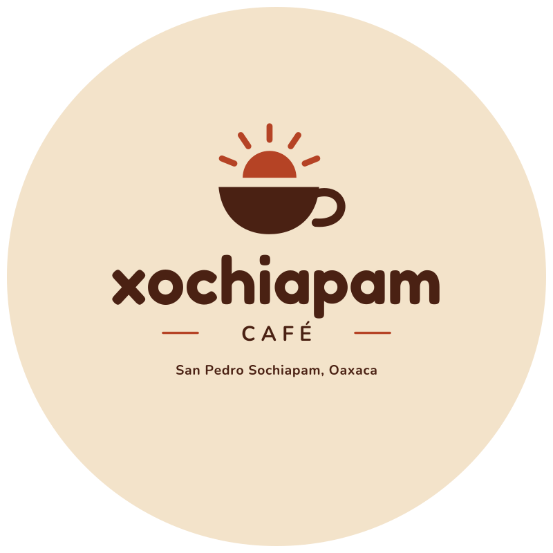
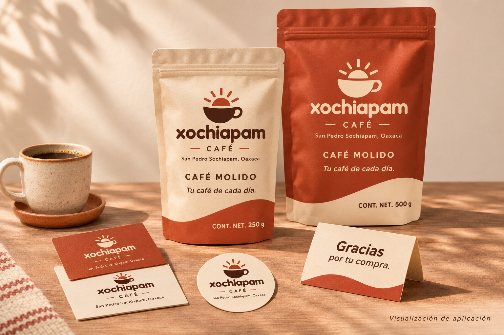
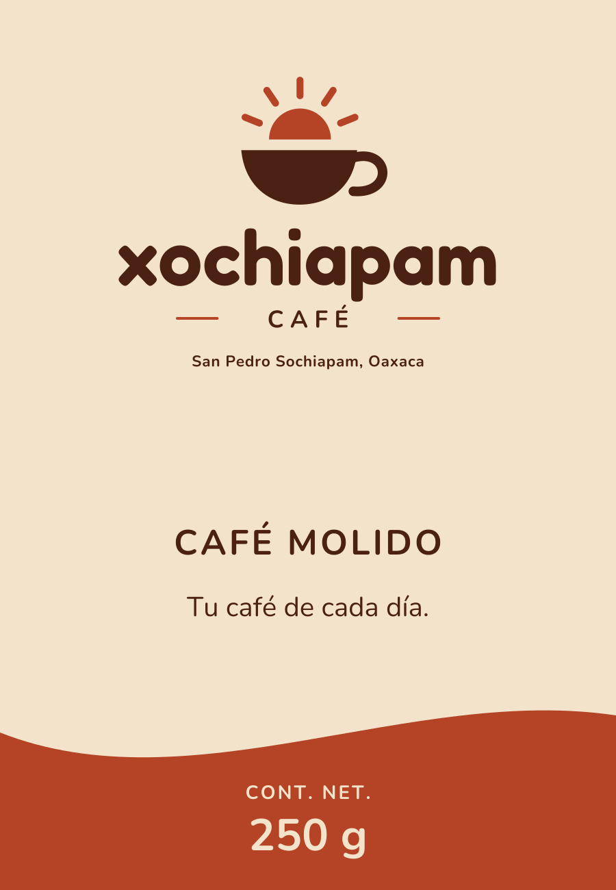
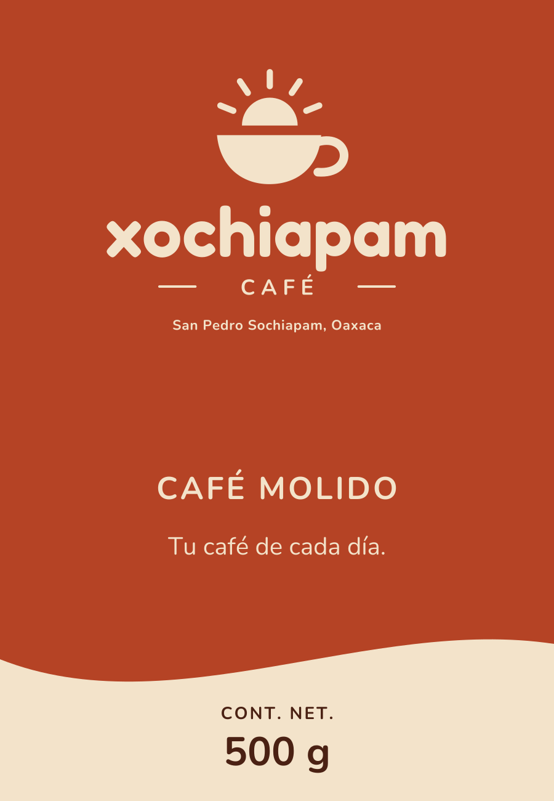
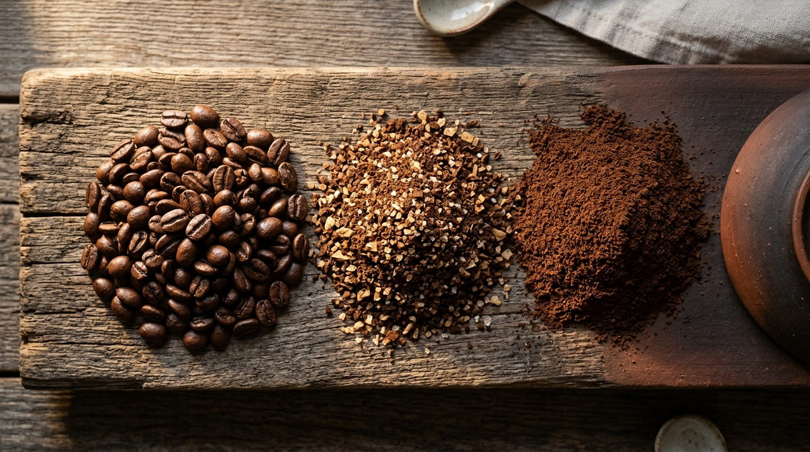
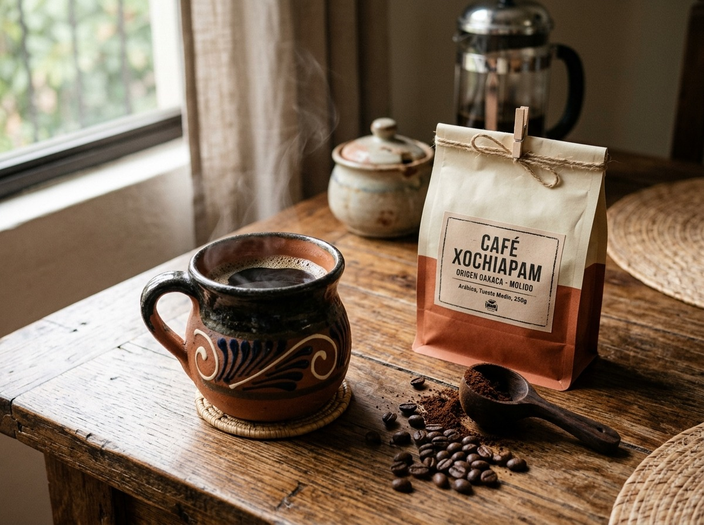
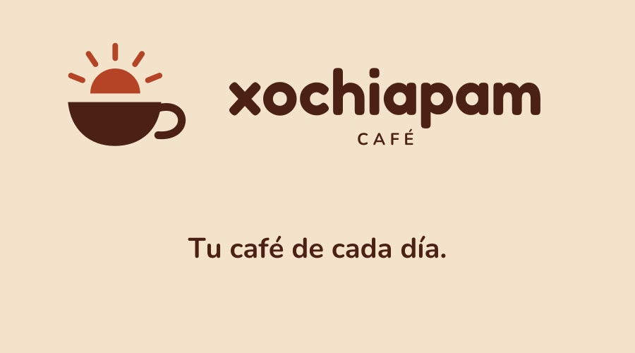
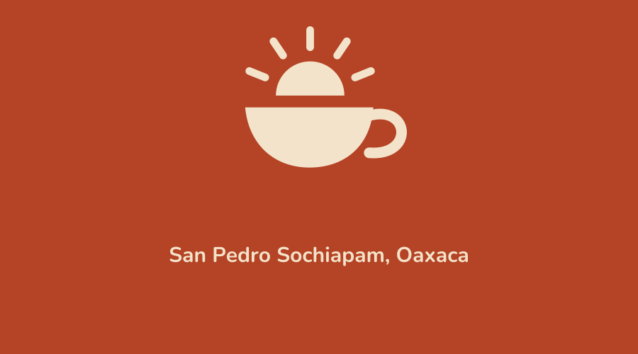

La taza y el amanecer
Nuestro símbolo une la taza humeante con el sol que sale entre las montañas. Expresa cercanía, pausa y el comienzo de cada mañana en casa.
De Oaxaca a tu taza.
Para los hogares de todos los días. Práctico, cercano y fácil de preparar: una marca cálida y sencilla pensada para acompañar la mesa de tu casa cada mañana sin complicaciones.


En Xochiapam hablamos como quien comparte una taza en la cocina: sencillo, amable y concreto. Nuestro café viene de San Pedro Sochiapam, Oaxaca, listo para la cafetera que ya usas todos los días.
Nuestro símbolo une la taza humeante con el sol que sale entre las montañas. Expresa cercanía, pausa y el comienzo de cada mañana en casa.
Explicamos qué se vende y cómo elegirlo sin palabras rebuscadas. Dos tamaños bien diferenciados por color y tres puntos de molienda para tu cafetera.
Café originario del municipio de San Pedro Sochiapam, en Oaxaca. Empacado en bolsas con cierre y sello para conservar su aroma en tu alacena.

Para conocer Xochiapam por primera vez o para hogares donde una sola persona prepara su taza cada mañana.

Para quienes ya tienen a Xochiapam en su cocina de diario, parejas o familias que preparan jarra completa.
Selecciona tu ritmo cotidiano para ver cuál bolsa te conviene llevar.
Elige el grosor según la cafetera que usas en tu cocina.
Textura equilibrada como arena fina, lista para preparar tu café de cada mañana sin complicaciones.
Taza limpia, amable y constante todos los días. El punto exacto para la mayoría de cafeteras de casa.
Cafeteras recomendadas en casa:




El sello circular acompaña cada bolsa para mantenerla bien plegada y lejos de la luz directa en tu cocina.
Sí, enviamos a cualquier ciudad de México por paquetería express. Al coordinar tu pedido por WhatsApp, despachamos tu paquete en un plazo de 24 a 48 horas hábiles para asegurarte un lote fresco y bien protegido.
Nuestras bolsas cuentan con válvula desgasificadora unidireccional y cierre tipo zip hermético, además del adhesivo circular incluido de regalo. Conservando la bolsa en tu alacena (lejos de calor y luz directa), mantiene su aroma y aceites óptimos de 4 a 6 semanas.
Aceptamos transferencia electrónica inmediata (SPEI sin comisión adicional), pago con tarjeta de crédito o débito mediante enlace bancario protegido y depósitos en tiendas de conveniencia. Al enviar tu pedido te proporcionamos los datos al instante.
Moler el café en el minuto previo a la infusión resguarda los compuestos aromáticos más sutiles. Si no tienes molino, no te preocupes: nuestra molienda media llega lista y calibrada para cafetera eléctrica o prensa francesa con excelente rendimiento.